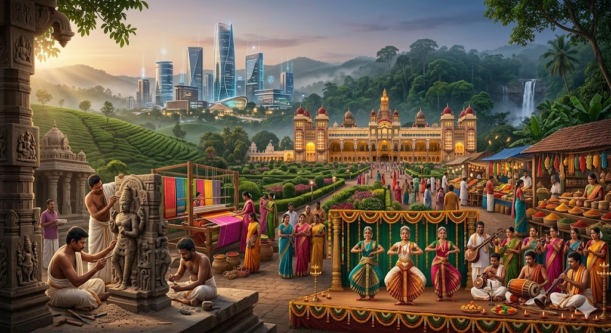

Innovation Ecosystem
A futuristic skyline rising in the distance represents a thriving center of technology, engineering excellence, and startup culture.
Where innovation meets heritage. Explore a visual journey through a region where cutting-edge technological progress and ancient cultural traditions thrive side by side.

Explore the visual clues hidden within the canvas.
A futuristic skyline rising in the distance represents a thriving center of technology, engineering excellence, and startup culture.
A grand heritage palace stands prominently, symbolizing centuries of royal history, historical architecture, and preserved cultural wealth.
Skilled stone sculptors carve intricate temple details, traditional silk weavers craft vibrant textiles, and classical dancers perform alongside traditional musicians.
Rolling plantation-covered hills, dense forests, breathtaking waterfalls, and vibrant spice markets showcase the region's extraordinary natural beauty.